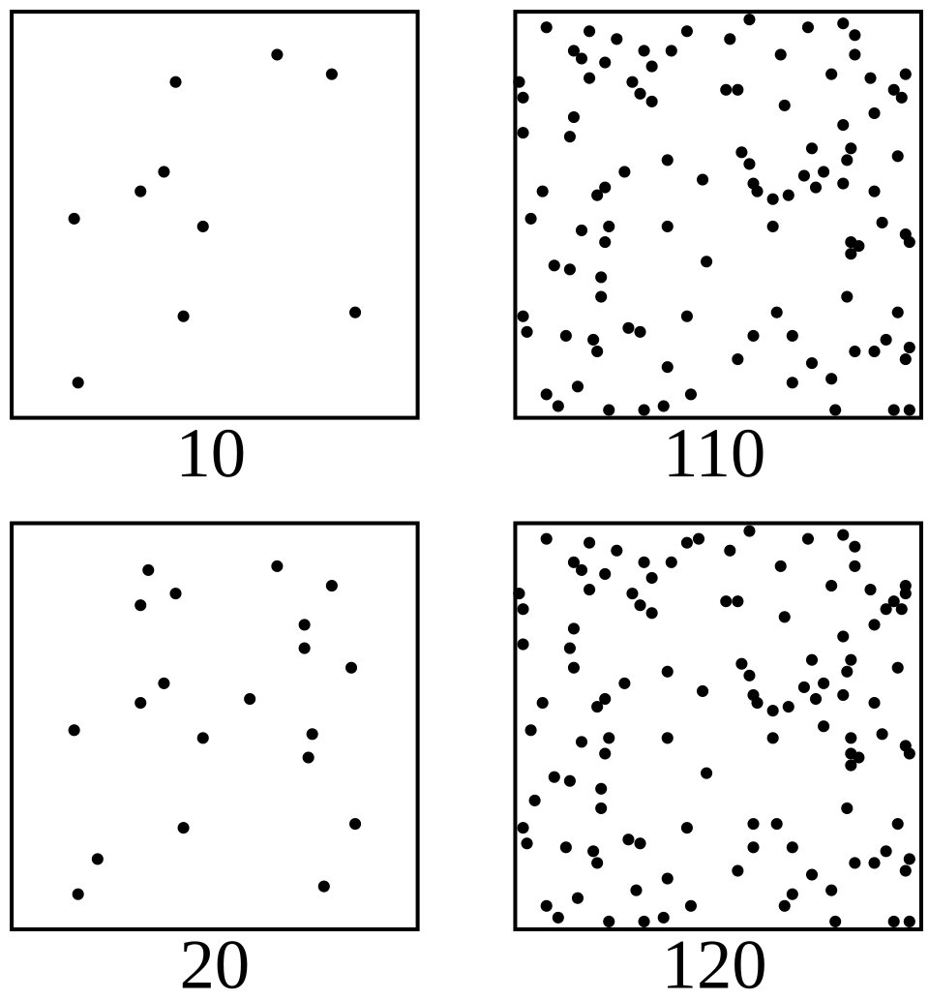

Śruti · intonation · continuous pitch · auditory perception
Why review “microtonality” at all?
“Microtonality” is useful as a modern analytical label, but Indian art music was not historically organised as a deviation from 12-tone equal temperament.
- Musicology: śruti, svara, grāma, rāga and ornamentation form an indigenous conceptual vocabulary.
- Performance: pitch can be stable, context-dependent, or continuously moving through meend, andolan and gamaka.
- Perception: listeners discriminate, categorise and learn pitch relationships through culture and training.
Rao & van der Meer (2010); Serrà et al. (2011); Koduri et al. (2014).

What do we mean by microtonality?
Measurement
In contemporary usage, “microtonal” often refers to pitch intervals or organisations finer than a semitone. Cents are a convenient logarithmic measurement: 100 cents = one 12-TET semitone.
But measurement ≠ theory
A cent value tells us how far apart two frequencies are. It does not tell us whether a musical culture treats that difference as a note, an inflection, an ornament, a category boundary, or expressive variation.
Working definition
For this review, microtonality is an umbrella term for pitch organisation, intonation or movement that cannot be adequately described by fixed 12-TET pitch categories alone.
A reference point: octave, semitone, cents & 12-TET
The basic map
In common Western equal-tempered practice, an octave doubles frequency and is divided into 12 equal logarithmic steps. Each step is a semitone; by convention each semitone is 100 cents, so the octave is 1200 cents.
The frequency ratio of one 12-TET semitone is 21/12. The cent scale is useful because it lets us compare intervals and measured intonation across tuning systems.
Why the piano is useful — and limited
The keyboard makes discrete pitch categories visually intuitive: C–C♯–D… But voice, violin, sitar and many Indian vocal/instrumental practices can move continuously between such locations.
So 12-TET is a measurement/reference framework here, not the definition of Indian pitch organisation.

Śruti is not just a smaller Western note
Śruti has been interpreted in multiple ways across historical texts and later scholarship: as a fine pitch distinction, a relational interval, a theoretical unit, or a concept involved in the positioning of svaras.
Rao & van der Meer argue that later attempts to equate the traditional 22 śrutis directly with “microtones” or “quartertones” create conceptual and mathematical problems.
Rao, S. & van der Meer, W. (2010), The construction, reconstruction, and deconstruction of shruti.
.png?width=1200)
From śruti theory to rāga practice
Ideas of fine pitch differentiation are found across early Indian music-theoretical traditions, but their terminology and conceptual meaning developed over time. These sources should therefore not be read as descriptions of a single, fixed modern tuning system.
22 positions, 22 intervals — or a theoretical framework?
The historical number 22 is central to Indian music theory, but modern reconstructions disagree on exact ratios, positions and interpretation.
- The Nāṭyaśāstra tradition distributes śrutis unequally among the seven svara regions.
- Dr. Vidyadhar Oke offers a modern mathematical/practical reconstruction of 22 śrutis and has translated that model into specially designed instruments, including a 22-śruti harmonium.
- Mohan (2023) compares Bharata’s and Oke’s methods and highlights differences in method, model and even the implied conception of śruti, testing them against earlier empirical pitch-measurement evidence.
- Performance data therefore should not be collapsed into one universal 22-frequency keyboard.
Rao & van der Meer (2010); Mohan (2023); Serrà et al. (2011). Oke is presented here as a modern reconstruction/model, not as settled empirical consensus.
Pitch is a trajectory, not only a coordinate
Stable intonation
A performer may dwell around a relatively stable pitch region. Its exact centre can depend on rāga, phrase, tonic, performer and style.
Continuous movement
Meend, andolan and gamaka create structured pitch motion. The path, rate, extent and target can carry musical information.
Koduri et al. (2014) explicitly model pitch-value distributions and context-based svara distributions from pitch contours.
What does measured performance suggest?
Serrà et al. (2011)
Analysed sung Carnatic and Hindustani recordings using pitch-distribution methods. Their corpus showed different tuning tendencies: Carnatic singing corresponded more closely with just-intonation references, while Hindustani singing showed a stronger equal-tempered influence.
Koduri et al. (2012; 2014)
Moved beyond a single tuning table by examining context-based svara distributions and rāga intonation. Their work shows that performed pitch values can depend on rāga and melodic context.
What this changes
Empirical studies shift the discussion from asking only where śrutis should occur to asking how pitch is actually realised in performance. They also caution against treating Indian classical music as one fixed tuning system.
Serrà et al. (2011); Koduri, Serrà & Serra (2012); Koduri et al. (2014).
One concept, several interpretations
Musicological critique
Rao & van der Meer show that śruti has accumulated different interpretations across history. Equating it directly with a modern “microtone” or a fixed frequency point can therefore obscure its musicological context.
Modern reconstruction
Dr. Vidyadhar Oke presents a mathematically specified 22-śruti model and translates it into practical instruments. This is useful as a contemporary reconstruction, but should be distinguished from universal empirical consensus.
Computational formalisation
ShrutiSense (Ghosh & Athipatla, 2025) uses a fixed 22-śruti pitch space within a computational model. It demonstrates one way to operationalise śruti computationally, while the chosen grid remains a modelling assumption.
Rao & van der Meer (2009, 2010); Mohan (2023); Oke; Ghosh & Athipatla (2025).
Do not collapse tuning, intonation and perception
1 · System
Tuning / theory
What pitch relations are proposed or used as references? Examples: ratios, scale structures, śruti frameworks.
2 · Performance
Acoustics / intonation
What f₀ trajectories are actually produced? Stable regions, deviations, ornaments, phrase-dependent targets.
3 · Listener
Perception / cognition
What differences can listeners detect, categorise, remember or interpret as musically meaningful?
Is śruti simply the JND?
JND / difference limen
The just-noticeable difference is a psychophysical threshold: the smallest change a listener can reliably discriminate under a specified task and stimulus condition.
It varies with frequency region, duration, level, task, context, stimulus complexity and listener experience.
Śruti
A historically situated musicological concept embedded in Indian theories of svara and melodic organisation.

Weber–Fechner law illustration, Wikimedia Commons, CC0.
Does musical experience shape fine-pitch perception?
Pitch discrimination
Musical training can improve sensitivity to small pitch differences, although the extent of this advantage depends on the stimulus, task and listener's training history.
Micheyl et al. (2006); Bidelman, Krishnan & Gandour (2011).
Musical context
Pitch is not necessarily perceived only as an isolated frequency. Learned musical categories and melodic context can influence how pitch differences are heard and interpreted.
Relevant to interpreting intonation and śruti in musical context.
Continuous pitch
Research using continuously changing pitch suggests that musical experience can influence the processing of dynamic pitch patterns, making this literature relevant to glides and other non-static forms of pitch movement.
Bidelman, Gandour & Krishnan (2011).
Culture & experience
Experience-dependent effects are not necessarily universal. Musical and linguistic background can shape pitch processing differently, highlighting the importance of the listener's learned auditory environment.
Bidelman, Gandour & Krishnan (2011).
Hindustani and Carnatic: related, not interchangeable
| Hindustani | Carnatic | |
|---|---|---|
| Pitch movement | Meend, andolan, gamak and phrase-specific intonation can be central to rāga identity. | Gamaka is central; svara identity may depend strongly on characteristic motion and melodic context. |
| Empirical tuning literature | Serrà et al. found stronger equal-tempered influence in their sampled sung corpus. | Same study found closer tendency toward 5-limit just-intonation references and a more continuous distribution. |
| Shared features | Tonic-centred relational pitch, oral/embodied training, rāga-specific expectations, context dependence, and extensive continuous pitch movement. | |
From a piano key to a rāga phrase
| Question | Western reference vocabulary | Indian musicological/performance vocabulary | Auditory-science test |
|---|---|---|---|
| Where is the pitch? | Note name, frequency, cents, tuning system | Svara/svarasthāna, tonic relation, rāga-specific intonation | Pitch matching; discrimination around a target |
| Is it a point? | Keyboard encourages discrete steps | A svara may occupy a region and be approached through characteristic motion | Category-boundary and identification tasks |
| What happens between notes? | Glissando / portamento can be described acoustically | Meend, andolan, gamaka and phrase grammar may carry rāga identity | Continuous-contour discrimination; trajectory manipulation |
| Who hears the difference? | Interval/tuning familiarity | Oral enculturation and tradition-specific training | Compare trained and untrained listeners across cultures |
Where the literature still leaves space
Definition gap
No single operational definition captures historical śruti theory, performed intonation, continuous ornaments and listener perception.
Perception gap
The relationship between śruti discourse and psychophysical thresholds such as JND has not been resolved by simply measuring cents.
Cross-cultural gap
More directly comparable experiments are needed across Hindustani-trained, Carnatic-trained, Indian non-musician and other musical-cultural groups.
Context gap
Pure tones are useful controls, but rāga meaning may emerge only when pitch is embedded in melodic context and motion.
Representation gap
Continuous f₀ can be extracted computationally, but culturally informed interpretation of contours and categories remains challenging.
Bridge gap
Historical musicology, acoustics, MIR and auditory neuroscience often ask related questions using different vocabularies.
What remains unresolved?
Definition gap
Microtonality, śruti, tuning, intonation and ornamentation are sometimes discussed together, although they describe different levels of musical organisation.
Theory–performance gap
Historical 22-śruti frameworks do not by themselves establish the pitch positions or trajectories used in contemporary rāga performance.
Fixed–dynamic gap
Pitch is often represented as stable note locations, while meend, andolan and gamaka make continuous movement and melodic context central to performance.
Tradition gap
Hindustani and Carnatic practices should not be collapsed into a single tuning model; empirical studies report different pitch-distribution tendencies.
Perception gap
Acoustic differences in performed pitch do not automatically tell us how those differences are heard, categorised or understood musically.
Representation gap
Computational models can track continuous f₀ or formalise śruti positions, but the relationship between such representations and musicological meaning remains unsettled.
How this review connects four literatures
Historical / theoretical
Nāṭyaśāstra, Saṅgītaratnākara and scholarship on śruti, svara and rāga.
Musicological / performance
Interpretations of śruti, intonation, ornamentation and rāga-specific pitch practice.
Computational / MIR
f₀ tracking, tonic-normalised pitch distributions, intonation histograms and context-sensitive contour analysis.
Auditory science
Pitch discrimination, JND, categorical perception, training effects and neural encoding of pitch.
Beyond pitch = beyond a frequency list
1
Microtonality should not automatically mean “deviation from 12-TET.”
2
Śruti cannot safely be reduced to one universal set of 22 fixed modern frequencies.
3
Indian pitch organisation must be studied across theory, acoustic performance and listener perception.
4
The literature does not support reducing Indian microtonality to a single frequency table; its meaning depends on historical, theoretical and performance context.
What does the Indian-music literature actually establish?
| Study | Tradition / method | Key contribution | Why it matters here |
|---|---|---|---|
| Jairazbhoy & Stone (1963) | Hindustani · empirical intonation | Early systematic investigation of present-day North Indian intonation; questions a simple fixed interpretation of 22 śrutis. | Establishes that performed svara intonation must be measured, not inferred only from theory. |
| Rao & van der Meer (2009) | Hindustani · musicological critique | Frames “microtonality” in Indian music as a conceptual problem rather than an automatic equivalence with Western microtones. | Motivates the title Beyond Pitch. |
| Rao & van der Meer (2010) | Historical musicology | Reconstructs competing meanings and interpretations of śruti across scholarship. | Core caution: śruti ≠ automatically a modern fixed microtonal frequency. |
| Serrà et al. (2011) | Hindustani + Carnatic · f₀ histograms | Finds different tuning tendencies in sampled traditions; Carnatic nearer JI references, Hindustani with stronger ET influence; no strong evidence for extra universal octave subdivisions. | Moves the debate from theoretical ratios to measured performance. |
| Koduri, Serrà & Serra (2012) | Carnatic · context-based svara distributions | Models intonation through pitch distributions conditioned by musical context. | Supports the idea that a svara is not adequately described by one frequency alone. |
| Koduri et al. (2012) | Hindustani + Carnatic · rāga recognition | Evaluates pitch-distribution representations for computational rāga recognition. | Shows both the usefulness and limits of static pitch distributions. |
| Rao & Rao (2014) | Hindustani · computational musicology review | Reviews intonation, improvisation, tonic/drone and melodic organisation in Hindustani practice. | Provides a modern musicological bridge between performance concepts and computation. |
| Koduri et al. (2014) | Carnatic · rāga intonation | Demonstrates rāga/context-sensitive intonation using pitch-track analysis. | Strong evidence against treating intonation only as a universal tuning grid. |
| Gulati et al. (2014) | Indian art music · tonic identification | Shows the tonic as the reference underlying computational pitch and intonation analysis. | Indian pitch is fundamentally relational to Sa; absolute Hz alone is insufficient. |
| Gupt (1996) | Historical musicology · Nāṭyaśāstra Ch. 28 | English translation and musicological exposition of Bharata’s chapter on ancient scales, including śruti, svara, grāma, mūrchanā and jāti. | Provides a direct bridge from the Sanskrit theoretical vocabulary to modern discussion; best used as a historical/musicological source, not a modern psychoacoustic validation. |
| Ghosh & Athipatla (2025) | Computational modelling · ShrutiSense | Models a 22-śruti pitch space with rāga-grammar constraints using an FST and grammar-constrained HMM for symbolic correction/completion. | A useful recent computational formalisation, but its 22-position cent grid is a modelling assumption and evaluation is largely simulated; it should not be treated as proof of a universal perceptual śruti scale. |
| Thakur (2015) | Hindustani · theoretical/expository | Develops a possible frequency-ratio logic for the 22-śruti model and relates it to Bharata’s tuning procedure. | Useful as one modern reconstruction—not as settled empirical proof of 22 fixed perceptual locations. |
Synthesis: Indian-music research increasingly shifts the question from “What are the 22 exact frequencies?” to “How are pitch relations realised in rāga, performance and context?”
What does auditory science add?
| Study | Method / population | Finding relevant to this review | Connection to śruti / microtonality |
|---|---|---|---|
| Tervaniemi et al. (2005) | ERP + behaviour · musicians/non-musicians | Musicians showed greater accuracy for small pitch deviations. | Training can alter sensitivity to fine pitch changes. |
| Micheyl et al. (2006) | Adaptive psychophysics | Classical musicians initially had substantially lower pitch-discrimination thresholds; psychoacoustic training improved non-musicians. | JND is experience- and task-dependent, not a culturally universal “śruti value.” |
| McDermott & Oxenham (2008) | Review · auditory pitch mechanisms | Music perception combines culture-specific organisation with constraints of the auditory system. | Provides the auditory foundation for separating acoustic frequency from perceived pitch. |
| Bidelman, Gandour & Krishnan (2011) | FFR · music/language expertise | Long-term experience shapes brainstem representation of behaviourally relevant pitch patterns. | Enculturation can influence early neural pitch encoding. |
| Bidelman, Krishnan & Gandour (2011) | Behaviour + neural encoding · musicians | Enhanced neural encoding predicted musicians’ perceptual pitch advantages. | Links physiological representation to fine-pitch behaviour. |
| Bidelman, Gandour & Krishnan (2011) | FFR · continuously gliding pitch | Musical experience enhanced encoding of musically relevant features within a continuous pitch glide. | Especially relevant to meend/gamaka: continuous trajectories can still contain learned perceptual structure. |
| Zarate et al. (2012) | Interval discrimination · musicians/non-musicians | Musical expertise affected discrimination across pitch-interval conditions; task structure mattered. | Warns against treating “smaller than a semitone” as a single perceptual category. |
| Indian Carnatic FFR study (2021) | FFR · vocalists, violinists, non-musicians | Tests brainstem encoding using Indian Carnatic vocal/instrumental transition stimuli and different listening biographies. | Shows why Indian musical stimuli and training histories deserve direct study rather than extrapolation from Western stimuli. |
From musicology → acoustics → perception
| Level | Main question | Representative literature | What can be concluded? |
|---|---|---|---|
| Historical theory | How were śruti, svara and pitch organisation conceptualised? | Nāṭyaśāstra; Gupt (1996); Saṅgītaratnākara; Rao & van der Meer (2010); Thakur (2015) | 22-śruti theory is historically important, but modern frequency/perceptual interpretations remain contested. |
| Performance acoustics | What pitches and trajectories do musicians actually produce? | Jairazbhoy & Stone (1963); Serrà et al. (2011); Koduri et al. (2014) | Intonation varies with tradition, rāga, context and performance; a fixed grid is incomplete. |
| Computational representation | How can Indian melodic pitch be represented from audio? | Koduri et al. (2012, 2014); Gulati et al. (2014); Rao & Rao (2014); Ghosh & Athipatla (2025) | Tonic-normalised f₀, distributions and trajectories provide useful but different representations. |
| Psychophysics | What differences can listeners discriminate? | Micheyl et al. (2006); Zarate et al. (2012) | Thresholds depend on listener experience, stimulus and task; JND is an experimental measurement. |
| Neural encoding | Does long-term experience alter pitch representation? | Bidelman et al. (2011a,b,c); Indian Carnatic FFR study (2021) | Experience-dependent neural effects are plausible and measurable, but must be tested with culturally appropriate stimuli. |
References
Jairazbhoy, N. A., & Stone, A. W. (1963). Intonation in present-day North Indian classical music. Bulletin of the School of Oriental and African Studies, 26(1), 119–132. https://doi.org/10.1017/S0041977X00074309
Rao, S., & van der Meer, W. (2009). Microtonality in Indian music: Myth or reality? FRSM, Gwalior.
Rao, S., & van der Meer, W. (2010). The construction, reconstruction, and deconstruction of shruti. In J. Bor, F. Delvoye, J. Harvey, & E. te Nijenhuis (Eds.), Hindustani Music: Thirteenth to Twentieth Centuries (pp. 673–696). Manohar.
Oke, V. Modern 22-śruti reconstruction and practical instrument work (including the 22-śruti harmonium). Included as a contemporary theoretical/practical model; see Oke’s published project materials.
Mohan, J. (2023). The methodologies of Bharata Muni and Dr. Vidyadhar Oke for determination of 22 Shruti-s with reference to their practical applicability: Evidence and conflicts. Sangeet Galaxy e-Journal, 12(1), 53–63.
Serrà, J., Koduri, G. K., Miron, M., & Serra, X. (2011). Assessing the tuning of sung Indian classical music. In Proceedings of the 12th International Society for Music Information Retrieval Conference (ISMIR), 157–162.
Koduri, G. K., Serrà, J., & Serra, X. (2012). Characterization of intonation in Karnāṭaka music by parametrizing context-based svara distributions. In Proceedings of the 2nd CompMusic Workshop.
Koduri, G. K., Gulati, S., Rao, P., & Serra, X. (2012). Rāga recognition based on pitch distribution methods. Journal of New Music Research, 41(4), 337–350. https://doi.org/10.1080/09298215.2012.735246
Rao, S., & Rao, P. (2014). An overview of Hindustani music in the context of computational musicology. Journal of New Music Research, 43(1), 24–33. https://doi.org/10.1080/09298215.2013.831109
Koduri, G. K., Ishwar, V., Serrà, J., & Serra, X. (2014). Intonation analysis of rāgas in Carnatic music. Journal of New Music Research, 43(1), 72–93. https://doi.org/10.1080/09298215.2013.866145
Gulati, S., Bellur, A., Salamon, J., Ranjani, H. G., Ishwar, V., Murthy, H. A., & Serra, X. (2014). Automatic tonic identification in Indian art music: Approaches and evaluation. Journal of New Music Research, 43(1), 53–71.
Gupt, B. (Trans. & Ed.). (1996). Nāṭyaśāstra, Chapter 28: Ancient Scales of Indian Music. New Delhi: Brahaspati Publications. [Historical/musicological source on śruti, svara, grāma, mūrchanā and jāti.]
Ghosh, R., & Athipatla, J. (2025). ShrutiSense: Microtonal modeling and correction in Indian classical music. arXiv:2508.01498. https://doi.org/10.48550/arXiv.2508.01498 [Recent computational preprint; interpret its fixed 22-śruti cent grid as a modelling choice rather than settled musicological consensus.]
Thakur, D. S. (2015). The notion of twenty-two shrutis: Frequency ratios in Hindustani classical music. Resonance, 20(6), 515–531. https://doi.org/10.1007/s12045-015-0211-6
References
Tervaniemi, M., Just, V., Koelsch, S., Widmann, A., & Schröger, E. (2005). Pitch discrimination accuracy in musicians vs nonmusicians: An event-related potential and behavioral study. Experimental Brain Research, 161, 1–10. https://doi.org/10.1007/s00221-004-2044-5
Micheyl, C., Delhommeau, K., Perrot, X., & Oxenham, A. J. (2006). Influence of musical and psychoacoustical training on pitch discrimination. Hearing Research, 219(1–2), 36–47. https://doi.org/10.1016/j.heares.2006.05.004
McDermott, J. H., & Oxenham, A. J. (2008). Music perception, pitch, and the auditory system. Current Opinion in Neurobiology, 18(4), 452–463.
Bidelman, G. M., Gandour, J. T., & Krishnan, A. (2011). Cross-domain effects of music and language experience on the representation of pitch in the human auditory brainstem. Journal of Cognitive Neuroscience, 23(2), 425–434. https://doi.org/10.1162/jocn.2009.21362
Bidelman, G. M., Krishnan, A., & Gandour, J. T. (2011). Enhanced brainstem encoding predicts musicians’ perceptual advantages with pitch. European Journal of Neuroscience, 33(3), 530–538. https://doi.org/10.1111/j.1460-9568.2010.07527.x
Bidelman, G. M., Gandour, J. T., & Krishnan, A. (2011). Musicians demonstrate experience-dependent brainstem enhancement of musical scale features within continuously gliding pitch. Neuroscience Letters, 503(3), 203–207. https://doi.org/10.1016/j.neulet.2011.08.036
Bidelman, G. M., Gandour, J. T., & Krishnan, A. (2011). Musicians and tone-language speakers share enhanced brainstem encoding but not perceptual benefits for musical pitch. Brain and Cognition, 77(1), 1–10. https://doi.org/10.1016/j.bandc.2011.07.006
Zarate, J. M., Ritson, C. R., & Poeppel, D. (2012). Pitch-interval discrimination and musical expertise: Is the semitone a perceptual boundary? Journal of the Acoustical Society of America, 132(2), 984–993. https://doi.org/10.1121/1.4733535
Indian Carnatic FFR study (2021). Effect of listening biographies on frequency-following responses of vocalists, violinists, and non-musicians to Indian Carnatic music stimuli. Frontiers / PMC-indexed article. [Full bibliographic details linked in source notes.]
Primary historical sources: Nāṭyaśāstra (music chapters) and Śārṅgadeva’s Saṅgītaratnākara. Historical dating and interpretation vary by edition and scholarship.
Acknowledgements
Institutional Support
I gratefully acknowledge the National Institute of Advanced Studies (NIAS), Bengaluru, for providing the academic environment and institutional support for this work.
Guidance & Scholarship
I sincerely thank Dr. Deepti Navaratna for her guidance, encouragement, and valuable inputs in shaping this review.
I also acknowledge the scholars and previous works that have contributed to the understanding of śruti, intonation, tuning, pitch organisation, and auditory perception in Indian classical music.